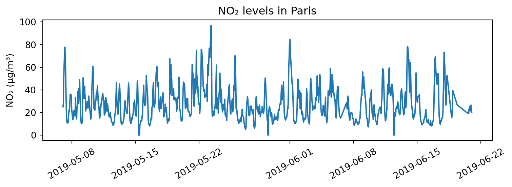
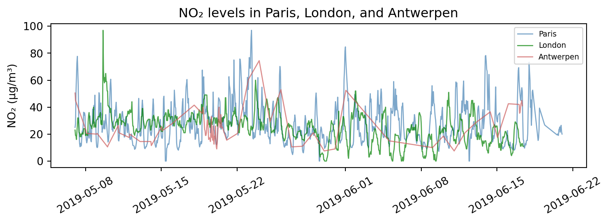
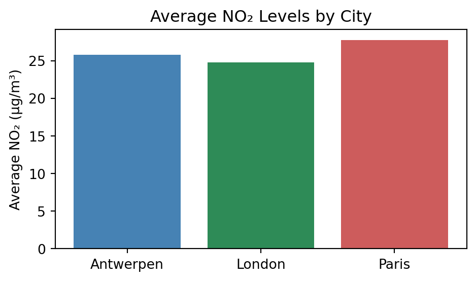

import numpy as np
import pandas as pd
import matplotlib.pyplot as plt
- Matplotlib
9.1. 데이터 시각화
- 데이터 시각화(data visualization)
- 데이터 분석 결과를 쉽게 이해할 수 있도록 표현하고 전달되는 과정
- 복잡한 정보를 한 눈에 파악하고, 숨겨진 패턴이나 관계를 드러냄
- 탐색적 자료 분석(EDA), 결과 해석, 의사결정 등에 폭넓게 활용
9.2. 시각화 옵션
- Matplotlib
- 넘파이 배열을 기반으로 개발된 다중 플랫폼 데이터 시각화 라이브러리
- 다양한 운영체제와 그래픽 백엔드에서 안정적으로 작동함
- 일반적으로 Pandas의 데이터프레임과 함께 자주 사용됨
# 시각화 옵션1 : 제목
xdata = [3, 5, 7, 9]
ydata = [2, 4, 6, 8]
plt.figure(figsize=(5, 3))
plt.title('Line Graph')
plt.plot(xdata, ydata)
plt.show()
# 시각화 옵션2 : 범례
# plot()의 label 속성에 범례에 표시할 문자열을 작성
data1 = [1, 3, 5, 7]
data2 = [9, 7, 5, 3]
plt.figure(figsize=(5, 3))
plt.title('Legend Properties')
plt.plot(data1, label='Salary')
plt.plot(data2, label='Prices')
plt.legend()
plt.show()# 시각화 옵션3 : 색상
# plot()의 color 속성에 색상 설정
plt.figure(figsize=(5, 3))
plt.title('Color Properties')
plt.plot(xdata, ydata, color='green')
plt.show()
# 시각화 옵션4 : 선 모양
# plot()의 linestyle 속성에 선 모양을 '-', '--', '-.', ':' 등으로 설정
plt.figure(figsize=(5, 3))
plt.title('Line shape Properties')
plt.plot(data1, color='b', linestyle='--', label='dashed line')
plt.plot(data2, color='r', linestyle=':', label='dotted line')
plt.legend()
plt.show()# 시각화 옵션5 : 마커
# plot()의 marker 속성에 마커를 '.', 'o', '^', 'S', 'D', 'x', '+', '*' 등으로 설정
plt.figure(figsize=(5, 3))
plt.title('Marker Properties')
plt.plot(data1, color='c', marker='o', label='circle marker')
plt.plot(data2, 'ms:', label='square marker')
plt.legend()
plt.show()# 시각화 옵션6 : x축 및 y축 이름
xdata = [3, 5, 7, 9]
ydata = [1, 3, 5, 7]
plt.figure(figsize=(5, 3))
plt.title('Axis name Properties')
plt.plot(xdata, ydata)
plt.xlabel('X value')
plt.ylabel('Y value')
plt.show()
# 시각화 옵션7 : 축 범위
xdata = [15, 25, 35, 45]
ydata = [2, 4, 6, 8]
plt.figure(figsize=(5, 3))
plt.title('X, Y range Properties')
plt.plot(xdata, ydata, 'b--o', markersize=7)
plt.xlim(10, 50)
plt.ylim(0, 10)
plt.show()
# 시각화 옵션8 : 내장 시각화 옵션
# Pandas 라이브러리의 plot() 메소드를 이용하여 그래프를 그릴 수 있음
my_score = [[60, 90, 95], [65, 85, 90], [80, 75, 100],
[95, 90, 85], [85, 80, 65]]
subject = ['1st', '2nd', '3rd']
df = pd.DataFrame(my_score, columns=subject)
# 선 그래프
df.plot(kind='line', figsize=(5, 3))
plt.show()
# 상자수염 그래프
df.plot(kind='box', figsize=(5, 3))
plt.show()
# 커널 밀도 그래프
df.plot(kind='kde', figsize=(5, 3))
plt.show()9.3. 선 그래프
- 일반적으로 시간에 따라 연속적으로 변화하는 데이터를 시각화할 때 사용함
- x축에는 시간, y축에는 수치형 변수를 지정함
- 시간의 흐름에 따라 데이터의 값은 증가/감소하는가?
- 계절에 따른 특정 패턴이 존재하는가? 눈에 띄는 변화 시점이 있는가?
## 실습 데이터 : air_quality 데이터셋
air_quality = pd.read_csv('https://raw.githubusercontent.com/pandas-dev/pandas/main/doc/data/air_quality_no2_long.csv')# city : 측정 도시
# country : 측정 국가
# date.utc : 측정 일시(UTC)
# location : 측정 위치
# parameter : 측정 항목
# value : 측정 값
# unit : 측정 단위
print(air_quality.info())<class 'pandas.core.frame.DataFrame'>
RangeIndex: 2068 entries, 0 to 2067
Data columns (total 7 columns):
# Column Non-Null Count Dtype
--- ------ -------------- -----
0 city 2068 non-null object
1 country 2068 non-null object
2 date.utc 2068 non-null object
3 location 2068 non-null object
4 parameter 2068 non-null object
5 value 2068 non-null float64
6 unit 2068 non-null object
dtypes: float64(1), object(6)
memory usage: 113.2+ KB
Noneprint(air_quality.head()) city country date.utc location parameter value unit
0 Paris FR 2019-06-21 00:00:00+00:00 FR04014 no2 20.0 µg/m³
1 Paris FR 2019-06-20 23:00:00+00:00 FR04014 no2 21.8 µg/m³
2 Paris FR 2019-06-20 22:00:00+00:00 FR04014 no2 26.5 µg/m³
3 Paris FR 2019-06-20 21:00:00+00:00 FR04014 no2 24.9 µg/m³
4 Paris FR 2019-06-20 20:00:00+00:00 FR04014 no2 21.4 µg/m³air_quality['city'].value_counts()city
Paris 1004
London 969
Antwerpen 95
Name: count, dtype: int64air_quality['parameter'].value_counts()parameter
no2 2068
Name: count, dtype: int64# date.utc 열을 datetime 형식으로 변환
air_quality['date.utc'] = pd.to_datetime(air_quality['date.utc'])print(air_quality.info())<class 'pandas.core.frame.DataFrame'>
RangeIndex: 2068 entries, 0 to 2067
Data columns (total 7 columns):
# Column Non-Null Count Dtype
--- ------ -------------- -----
0 city 2068 non-null object
1 country 2068 non-null object
2 date.utc 2068 non-null datetime64[ns, UTC]
3 location 2068 non-null object
4 parameter 2068 non-null object
5 value 2068 non-null float64
6 unit 2068 non-null object
dtypes: datetime64[ns, UTC](1), float64(1), object(5)
memory usage: 113.2+ KB
Noneprint(air_quality.head()) city country date.utc location parameter value unit
0 Paris FR 2019-06-21 00:00:00+00:00 FR04014 no2 20.0 µg/m³
1 Paris FR 2019-06-20 23:00:00+00:00 FR04014 no2 21.8 µg/m³
2 Paris FR 2019-06-20 22:00:00+00:00 FR04014 no2 26.5 µg/m³
3 Paris FR 2019-06-20 21:00:00+00:00 FR04014 no2 24.9 µg/m³
4 Paris FR 2019-06-20 20:00:00+00:00 FR04014 no2 21.4 µg/m³# 선 그래프1 : Paris의 NO2 농도 변화
paris_data = air_quality[air_quality['city'] == 'Paris']
plt.figure(figsize=(8, 3))
plt.plot(paris_data['date.utc'], paris_data['value'])
plt.title('NO₂ levels in Paris')
plt.xlabel('Date')
plt.ylabel('NO₂ (µg/m³)')
plt.tight_layout()
plt.show()
# 선 그래프2 : 세 도시의 NO2 농도 변화
cities = ['Paris', 'London', 'Antwerpen']
colors = ['steelblue', 'green', 'indianred']
plt.figure(figsize=(8, 3))
for i, city in enumerate(cities):
city_data = air_quality[air_quality['city'] == city]
plt.plot(city_data['date.utc'], city_data['value'],
label=city, color=colors[i],
linewidth=1, alpha=0.7)
plt.title('NO₂ levels in Paris, London, and Antwerpen')
plt.xlabel('Date')
plt.ylabel('NO₂ (µg/m³)')
plt.legend(loc='upper right', fontsize=7)
plt.tight_layout()
plt.show()
9.4. 막대 그래프
- 일반적으로 집단 간 비교나 범주형 변수를 시각화할 때 사용함
- 가독성 측면에서 항목의 개수가 적으면 세로 막대, 많으면 가로 막대가 유리함
# 막대 그래프1 : 도시의 측정 빈도
city_counts = air_quality['city'].value_counts()
plt.figure(figsize=(5, 3))
plt.bar(city_counts.index, city_counts.values, color=['steelblue', 'seagreen', 'indianred'])
plt.title('Frequency of Measurements by City')
plt.xlabel('City')
plt.ylabel('Frequency')
plt.tight_layout()
plt.show()# 막대 그래프2 : 도시별 평균 NO₂ 농도
city_avg = air_quality.groupby('city')['value'].mean()
plt.figure(figsize=(5, 3))
plt.bar(city_avg.index, city_avg.values, color=['steelblue', 'seagreen', 'indianred'])
plt.title('Average NO₂ Levels by City')
plt.xlabel('City')
plt.ylabel('Average NO₂ (µg/m³)')
plt.tight_layout()
plt.show()
9.5. 히스토그램
- 수치형 변수의 분포를 시각화할 때 사용함
- 데이터를 일정한 구간(bin)으로 나누고, 각 구간에 속하는 값들의 빈도를 막대의 높이로 나타냄
# 히스토그램1 : Paris의 NO2 농도 분포
paris_data = air_quality[air_quality['city'] == 'Paris']
plt.figure(figsize=(5, 3))
plt.hist(paris_data['value'], bins=15)
plt.title('Distribution of NO₂ in Paris')
plt.xlabel('NO₂ (µg/m³)')
plt.ylabel('Frequency')
plt.tight_layout()
plt.show()
# 히스토그램, 다중 그래프 : 세 도시의 NO2 농도 분포
cities = ['Paris', 'London', 'Antwerpen']
colors = ['steelblue', 'green', 'indianred']
plt.figure(figsize=(8, 3))
for i, city in enumerate(cities):
city_data = air_quality[air_quality['city'] == city]
plt.subplot(1, 3, i+1)
plt.hist(city_data['value'], density=True,
label=city, color=colors[i])
plt.xlabel('NO₂ (µg/m³)')
plt.ylabel('Frequency')
plt.legend(loc='upper right')
plt.xlim(0, 100)
plt.ylim(0, 0.05)
plt.tight_layout()
plt.show()
9.6. 상자그림
- 수치형 변수의 분포를 시각화할 때 사용함
- 다섯 숫자 요약값을 기반으로 이상값, 분포의 비대칭 여부 등을 직관적으로 파악할 수 있음

# 상자그림1 : Paris의 NO2 농도 분포
paris_data = air_quality[air_quality['city'] == 'Paris']
plt.figure(figsize=(5, 3))
plt.boxplot(paris_data['value'], vert=False, widths=0.5)
plt.title('Distribution of NO₂ in Paris')
plt.xlabel('NO₂ (µg/m³)')
plt.yticks(range(1,2), ['Paris'])
plt.show()# 상자그림2 : 세 도시의 NO2 농도 분포
cities = ['Paris', 'London', 'Antwerpen']
colors = ['steelblue', 'green', 'indianred']
data = [air_quality[air_quality['city'] == city]['value'] for city in cities]
plt.figure(figsize=(5, 3))
box = plt.boxplot(data, vert=False, widths=0.5)
plt.xlabel('NO₂ (µg/m³)')
plt.yticks(range(1,4), cities)
plt.tight_layout()
plt.show()9.7. 산점도
- 두 수치형 변수 간 관계를 시각화할 때 사용함
- 데이터의 분포, 이상값, 변수 간 상관관계, 그룹화된 패턴 등을 직관적으로 파악할 수 있음
## 실습 데이터 : tips 데이터셋
import seaborn as sns
tips = sns.load_dataset('tips')
print(tips.head()) total_bill tip sex smoker day time size
0 16.99 1.01 Female No Sun Dinner 2
1 10.34 1.66 Male No Sun Dinner 3
2 21.01 3.50 Male No Sun Dinner 3
3 23.68 3.31 Male No Sun Dinner 2
4 24.59 3.61 Female No Sun Dinner 4# 산점도1 : 식사 금액과 팀 금액 관계
plt.figure(figsize=(4, 4))
plt.scatter(tips['total_bill'], tips['tip'])
plt.title('Scatter Plot of Total Bill vs Tip')
plt.xlabel('Total Bill')
plt.ylabel('Tip')
plt.tight_layout()
plt.show()# 산점도2 : 식사 금액과 팀 금액, 식사 시간의 관계
plt.figure(figsize=(4, 4))
plt.scatter(tips['total_bill'], tips['tip'],
c=tips['time'].map({'Lunch': 'orange', 'Dinner': 'gray'}), alpha=0.7)
plt.title('Scatter Plot of Total Bill vs Tip')
plt.xlabel('Total Bill')
plt.ylabel('Tip')
plt.tight_layout()
plt.show()